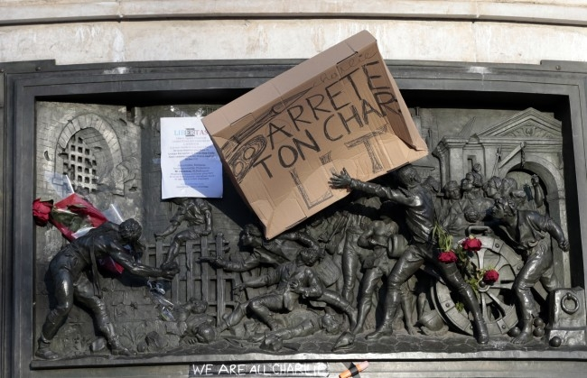

Because conspiracy theories address an increasingly inquisitive public in the face of a rapidly evolving history, articles aimed at demystifying these theories essentially answer the same question as the conspiracy sites themselves: what to believe and whom to trust?
A Question of Bad Faith?
Schematically, any conspiracy theory or anti-theory is rooted either in the desire to defend a specific interest or ideology, or in the intent to promote the “truth” about observed historical events. Thus, bad faith discourses oppose good faith discourses, in both camps, and the challenge is to consider the interests and ideologies defended by each side without reducing criticism to a series of ad hominem arguments that attribute credibility or discredit to different discourses solely based on the speaker.
It is not because an individual is an engineer at Monsanto, a government minister, a member of an anti-Zionist association, or a journalist at a major media outlet that their discourse should be taken as inherently true or false. It is the test of facts and adherence to logic that should constitute the standard of truth in this area as in any other.
Bad faith only begins when we continue to defend a false belief because it justifies our current or future actions. For example, imagine that in January 2016, French intelligence discovers that the November attacks were actually carried out by jihadists residing in Egypt, in retaliation for France’s military support to dictator al-Sisi, who is himself responsible for the massacre at Rabia-El-Adawiya Square. It is understandable that such a discovery would be difficult to communicate to the French public, as it would require justifying France’s position on Syrian and Egyptian issues differently. In this situation, what to do? The simplest solution might seem to be to maintain an official version of events while working behind the scenes to refocus the fight against our real enemies. But once such a divergence is created between official history and real history, how can we prevent citizens, journalists, and academics seeking understanding from pointing out inconsistencies and speculating on undisclosed information?
Pious Lies of the State and Democracy
The moral legitimacy of the pious lie is linked to a millennial philosophical question, to which this post does not need to take a side. We will only point out that, in this matter, the “deontological” approach defended by thinkers who aim for truth, such as Kant or Plato, contrasts with the “utilitarian” approach advocated by thinkers aiming for happiness, such as Rousseau or Mill.
Not all lies are pious, but believing that all lies are told with malicious intent is a sign of extreme and pathological conspiracism. Yes, we are likely lied to, but why assume that every lie necessarily reflects a malevolent intention towards the French people in general or a particular minority of French citizens? Let us guard against this type of conspiracism and assume that the lies that create a divergence between real history and official history stem from good intentions.
By definition, a pious lie submits the ideal of Truth to the quest for Good, and if we are subjected to such a lie, it means that individuals with access to the “truth” believe it to be contrary to the “good” of those without access to it, resulting in a double problem.
On one hand, where does the idea come from that the public would be incapable of understanding and accepting the real reasons behind a political decision or a war?
On the other hand, where does this “good” pursued by those who lie so piously come from?
In other words, the pious lie is based on the distinction between two social classes: one enlightened and informed, deciding for another, confused and misinformed. In fact, in this enlightening 2009 interview, François Hollande himself denounced the perverse logic of state lies told in the name of the fight against terrorism.
François Hollande in 2009, on the Sarkozy government’s handling of the terrorist issue
Furthermore, as beneficial as they might be for maintaining public order and the homeland as a whole, some pious lies can have detrimental consequences. In fact, it is often the plausibility of the lie and the skill with which it is executed that determine its adverse effects. Imagine a doctor trying to reassure a patient by hiding part of the test results. If the doctor lies poorly or if some of their pious lies have been discovered in the past, the patient, lacking confidence, might imagine suffering from a more serious illness than the one they actually have!
In the social and political realm, bad lies, when detected as such, can cause the public to fear the future and others more than if the truth were exposed by “those who know.” To take a recent example, it is difficult to believe in the fortuitous nature of the “suicide” of Commissioner Helric Fredou on the very night of the Charlie Hebdo attacks. This case, on which the government only communicated in December, despite a request from a deputy in January, has actively fueled various conspiracy theories. What might appear as a necessary pious lie has thus become the focal point of often fantastical and terrifying discourses about the supposed involvement of the government in this series of murders. One might even think that the truth about this somewhat mysterious death – however unsettling – would be far less worrying than the speculations induced by the government’s silence.
If we assume that some pious lies are useful and necessary for the exercise of power, should we then urge those who lie to “lie better,” as Didier Super humorously does in one of his recent videos?

Unless we fall into a mystifying idealism that believes the government and media always know and relay the entire truth about the history unfolding before our eyes, the above considerations justify critical reflection, investigative journalism, and a generally skeptical position towards discourses from both the most dominant and the most protesting castes in our society. Nevertheless, why does this noble quest for truth so often take the form of a conspiracy theory and conspiracism, which involves attributing responsibility for significant events and the simultaneous construction of the official version to a small group of people organized in a secret society?
There are many possible answers to this question, but three main causes can be distinguished for the emergence of such theories.
On one hand, conspiracies and plots have existed and still exist, so it can sometimes be justified to consider this hypothesis – with all the necessary precautions.
On the other hand, as a discourse, conspiracism can serve to defend specific interests or promote particular ideologies. For example, sites like Panamza or Égalité et Réconciliation clearly distinguish themselves by their anti-Zionism, so the systematic search for connections between the State of Israel and the attacks in France appears more as a business model than investigative journalism.
Finally, as explained very well (among other things) in the special issue of the Agone history journal published in January 2012, the very term “conspiracy theory” is sometimes used to actively discredit certain non-conforming discourses and forms of investigative journalism.
While we can understand why conspiracy theories emerge in public debate, these explanations do not tell us why they sometimes irrationally captivate their audience. This is where (neuro)sciences can help.
Theory of Mind
As we have seen earlier, when the truth is obscured about important events, even if it is to facilitate governance oriented towards the public good, it can lead to a significant loss of trust in the official discourse, whether it comes directly from those who govern or the media that relay their statements. Thus, the citizen finds themselves in suspense and the field of “possible truths” expands: in addition to the difficulty of understanding already tremendously complex facts, there is added uncertainty about the facts themselves.
Now, what “cognitive tools” are available to humans confronted with such uncertainties? There are two main cognitive mechanisms that can be activated:
To hold to previously acquired knowledge, since the human mind tends to prefer certainty. For instance, if a subject has previously believed that an attack was carried out by jihadists of Saudi origin, they are more likely to think that new and diverse information will fit within this preconceived framework.
To try to attribute the observed facts to a coherent, internalized representation of a global truth, even if this representation is completely speculative or unverified. This cognitive tendency to seek an overall coherence has been extensively studied under the umbrella of the “theory of mind” in cognitive sciences.
Theory of Mind: The Role of Agency and Conspiracy
The theory of mind involves the ability to attribute mental states (like beliefs, desires, and intentions) to oneself and others. This cognitive ability allows individuals to understand that others have thoughts and perspectives that differ from their own. It’s crucial for social interactions and understanding intentions behind actions.
When a significant event occurs, and there’s a lack of transparent information, people tend to employ their theory of mind to make sense of it. This often leads them to infer the presence of hidden agents or intentions behind the events. For instance, if an attack occurs and official explanations seem unsatisfactory, people might infer that a hidden group or agency is responsible, trying to fill in the gaps with their own theories.
The Agency Detection Framework is one theoretical perspective that explains why people might believe in conspiracy theories. According to this framework, humans have evolved to detect agency – that is, to recognize when intentional actions are at play. This ability is essential for survival, helping humans avoid danger and understand the behavior of others. When faced with ambiguous or complex events, this innate tendency can lead people to attribute the events to malevolent agents or secretive groups, even when there is no concrete evidence.
Coherence Theory: Making Sense of the World
The coherence theory suggests that people strive to create a coherent narrative that makes sense of disparate pieces of information. When faced with incomplete or conflicting information, individuals attempt to construct a unified story that ties together the available facts. This drive for coherence can lead people to adopt conspiracy theories, as these theories often offer a seemingly comprehensive explanation that ties together various elements of an event in a way that makes sense within the theory’s framework.
In summary, the human brain’s tendency to detect agency and seek coherence plays a significant role in the formation and attraction of conspiracy theories. When faced with uncertain or incomplete information, people use these cognitive mechanisms to construct and cling to theories that provide a sense of understanding and predictability in an otherwise chaotic and opaque world.
Conclusion
Understanding the cognitive underpinnings of conspiracy theories helps us appreciate why they captivate and persist despite a lack of concrete evidence. By recognizing the role of theory of mind, agency detection, and coherence theory, we can better grasp why some people are drawn to these theories and how they function in the broader context of information processing and belief formation. This insight also highlights the importance of critical thinking and transparent communication in mitigating the spread and impact of conspiracy theories.